レコード・クリーナー
レコードの盤面清掃用。トーンアーム状の自動タイプ、オーソドクッスなベルベットタイプ、
ベルベットに化学処理したタイプ、粘着式、パック式がある。
�@トーンアーム・タイプ
オート1
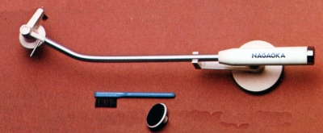
■価格 1,500円
■備考 トーンアーム状の自動タイプ。
価格は1973年のもの。
バーチカルクリーナー
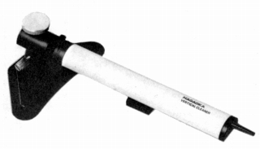
■価格 600円
■備考 アーム状の自動クリーナー。
ただし、平行移動のリニアタイプ。
1979年頃には「バーチカル132」という名称で販売。当時の価格は2,300円
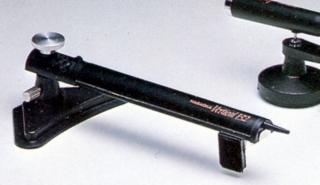
クリーンマスター
（画像なし）
■価格 1,000円
■備考 トーンアーム状の自動タイプ
価格は1979年のもの。
セルフ
（画像なし）
■価格 1,000円
■備考 トーンアーム状の自動タイプ
価格は1979年のもの。
オート131
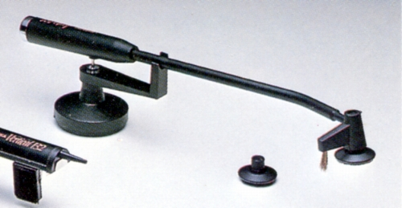
■価格 1,700円
■備考 トーンアーム状の自動タイプ。スペアパッド付き。
価格は1979年のもの。
かつての「オート1」と同じもの？
ケミカル加工したベルベットクリーナーとブラシの組合せ。
オート102
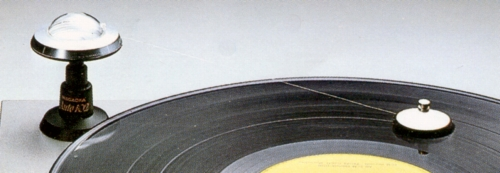
■価格 2,000円
■備考 トーンアームタイプとしたが変則型。ベルベットパッドを糸でトローリング？。
�Aベルベット・タイプ（ドライ）
ノーマルのベルベッドを使用したクリーナー。乾燥した状態で使う。
上位機種にはイタリア製ベルベッドが使用されていた。
ロンド4
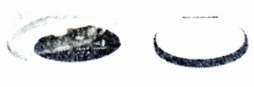
■価格 1,000円
■備考 ベルベットタイプ？。
価格は1973年のもの。
シェル（大）
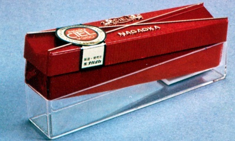
■価格 250円
■備考 ベルベットタイプ。クリーナー部の長さ14�p。
価格は1973年のもの。
1975年頃は350円
写真は1975年頃のモデル
管理人が最初に使ったクリーナーはこれだった。
1981年頃には「シェル111」と改称
400円
1983年頃にはデザイン変更
CL-111の型番を持つものもある
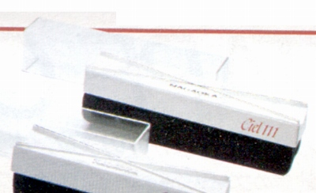
（1983年頃のCL-111)
シェル（中）
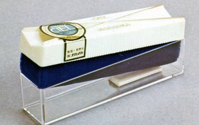
■価格 200円
■備考 ベルベットタイプ。クリーナー部の長さ12�p。
価格は1973年のもの。
1975年頃は300円
写真は1975年頃のモデル
1981年頃には「シェル110」と改称
350円
1983年頃にはデザイン変更
CL-110の型番を持つものもある
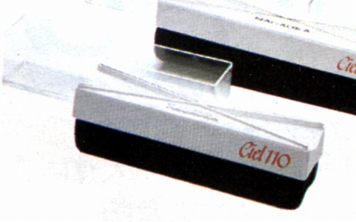
（1983年頃のCL-110)
シェル（小）
（画像なし）
■価格 150円
■備考 ベルベットタイプ。
価格は1973年のもの。
アルジャント
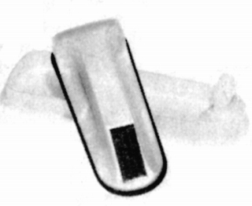
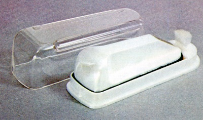
■価格 650円
■備考 ベルベットタイプ。
価格は1973年のもの。
1975年頃は\800
イタリア製ベルベット使用の高級タイプ
1981年頃には「アルジャント113」と改称 1,000円
CL-113の型番を持つものもある。
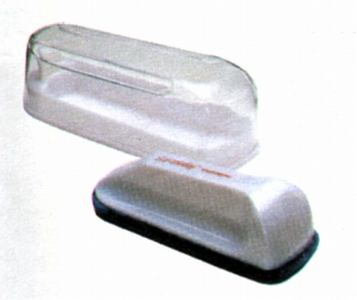
（1983年頃のCL-113)
現在（2018年4月）もほぼ同様の商品が「CL-116」という名称で販売されている
アルジャント4
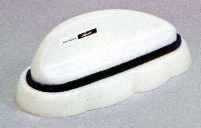
■価格 1,200円
■備考 ベルベットタイプ。
価格は1975年のもの。
イタリア製ベルベット使用の高級タイプ
4チャンネルレコード用の最高級モデル。
ブリット
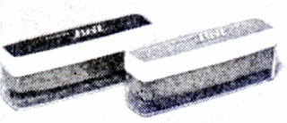
■価格 500円
■備考 ベルベットタイプ。
価格は1973年のもの。
ホワイティー
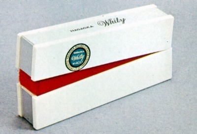
■価格 400円
■備考 ベルベットタイプ。
価格は1975年のもの。
ホワイティー�U
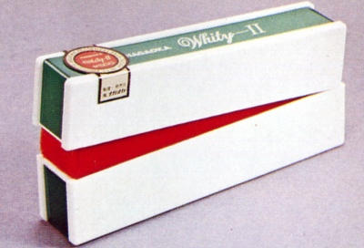
■価格 500円
■備考 ベルベットタイプ。
価格は1975年のもの。
オーバル117
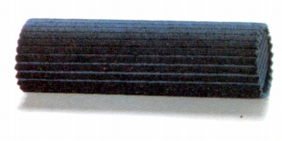
■価格 800円
■備考 棒状のスポンジタイプ。長さ11�p。
価格は1983年のもの。
CL-117の型番を持つものもある。
ザ・クリーナー101
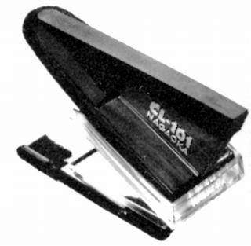
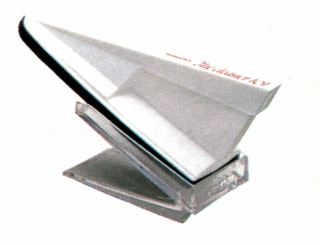
■価格 600円
■備考 ベルベットタイプ。クリーナー部の長さ10�p。
価格は1983年のもの。
CL-101の型番を持つものもある。
�Bベルベット・タイプ（ウェット）
ノーマルのベルベッドを使用したクリーナー。
ベルベッドの表面に湿気を持たせるタイプ。
アルファ
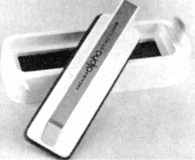
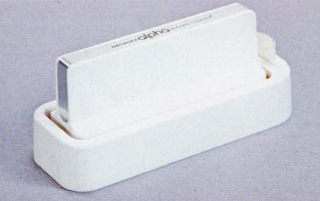
■価格 600円
■備考 ベルベットタイプ。
ケース底にスポンジがあり、それに水を含ませ
ウェットタイプとしても使用可。
価格は1975年のもの。
1981年頃には「アルファウェット115」と改称 1,200円
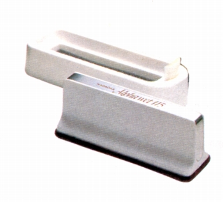
（1983年頃のCL-115)
ドライ＆ウェット
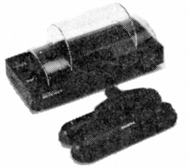
■価格 1,500円
■備考 湿式用と乾式用の2つのパッドを持つクリーナ。
価格は1979年のもの。
1981年頃には「ドライ＆ウェット116」と改称 1,700円
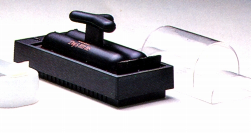
ウェット107
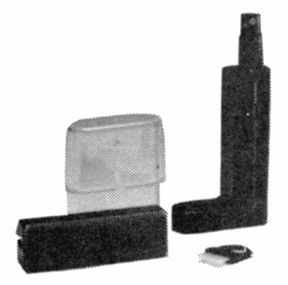
■価格 1,700円
■備考 湿式。
価格は1984年のもの。
�Cベルベット・タイプ（化学処理）
ベルベッドを植物性油脂を化学加工した特殊液で処理したタイプ。
ケミック
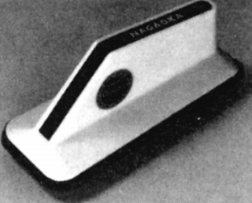
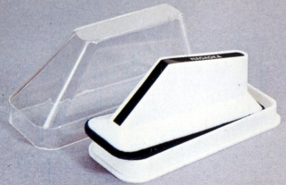
■価格 600円
■備考 ベルベットタイプ。クリーナー部の長さ9�p。
価格は1975年のもの。
植物性油脂を化学加工した特殊液で処理。
1981年頃には「ケミック103」と改称 700円
CL-103の型番を持つものもある。
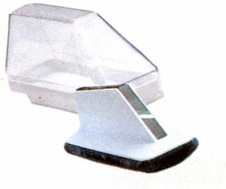
（1983年頃のCL-103)
スーパーケミック
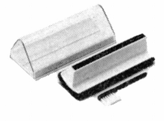
■価格 1,200円
■備考 ベルベットタイプ。クリーナー部の長さ10�p。
価格は1975年のもの。
植物性油脂の特殊液で処理したベルベッドと
センターに細い毛先のブラシを配置したモデル。
価格は1979年のもの。
1979年頃には「スーパーケミック104」と改称 1,400円
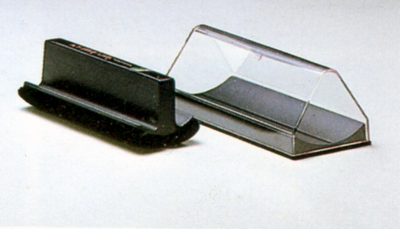
1979年頃ノスーパーケミック104
CL-104の型番を持つものもある。
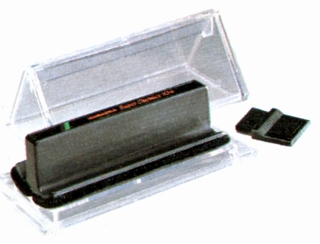
（1983年頃のCL-104)
QR-202J
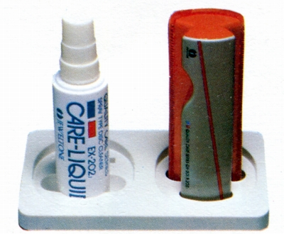
■価格 1,500円
■備考 ベルベットタイプ。
スプレーEX-202Jとのセットでは「QR-202J(2,000円)」。
曲面加工された特殊ベルベッドのクリーナー。
専用のスプレーを吹きかけ、ウェットタイプとしても使用する。
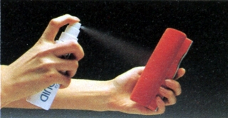
「ジュエルトーン」ブランドの製品
�D粘着タイプ
海外製品では粘着シートのものが多いが、こちらは粘着力の
ある特殊ラバー製ローラーを使用。水洗いで再使用可。
ローリングクリーナー
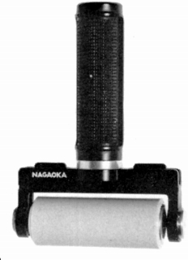
■価格 2,900円
■備考 粘着タイプ。ローラ幅8�p。
価格は1978年のもの。
別売りの交換用ローラあり。
1979年頃には「ローリング150」と改称 3,300円
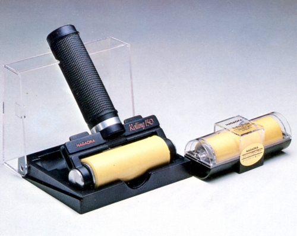
ローリング150
CL-150の型番を持つものもある。
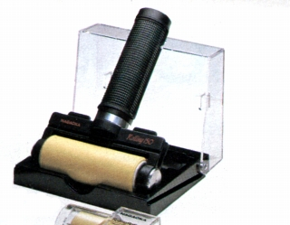
（1983年頃のCL-150)
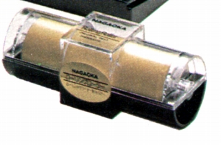
（交換用ローラー、「ローリングローラ」、AS-150の型番付きのものもある）
ローリング152
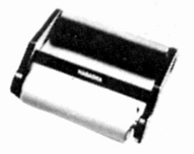
■価格 2,000円
■備考 粘着タイプ。
価格は1983年のもの。
ホワイト、レッド、ブルーモデルあり
別売りの交換用ローラあり。
CL-152の型番を持つものもある。
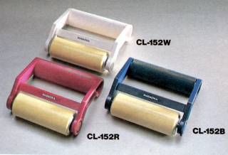
現在（2013年10月）もほぼ同様の商品が「CL-152」という名称で販売されている。
ローリング152RS
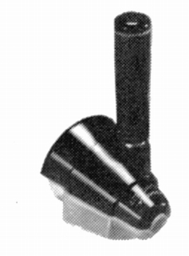
■価格 3,000円
■備考 粘着タイプ。
テーパー付きローラー採用
価格は1984年のもの
�Eパック・タイプ
現在でも、木工用ボンドなどで実施する強者がいる
パック式のディスククリーナー。
DC-203J
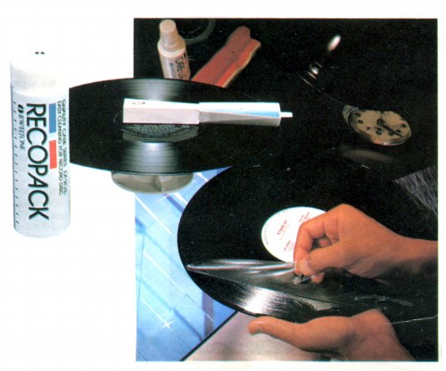
■備考 商品名「レコパック」。
パック液、塗布用の専用アプリケータと、
レコード支持台（2個）、剥離紙のセット。
価格は1983年のもの
パック液（EX-203J 2,000円）、追加用の支持台（EX-23J 400円）の別売りあり。
なお当時のカタログでは、パックした状態でのレコードの
長期保存を推奨しているが、実効性は不明。